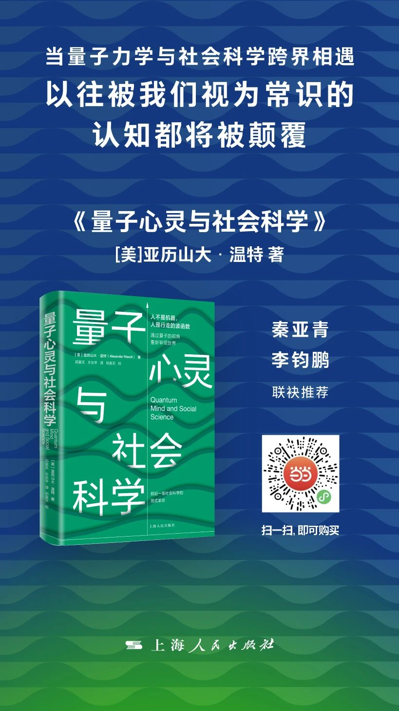
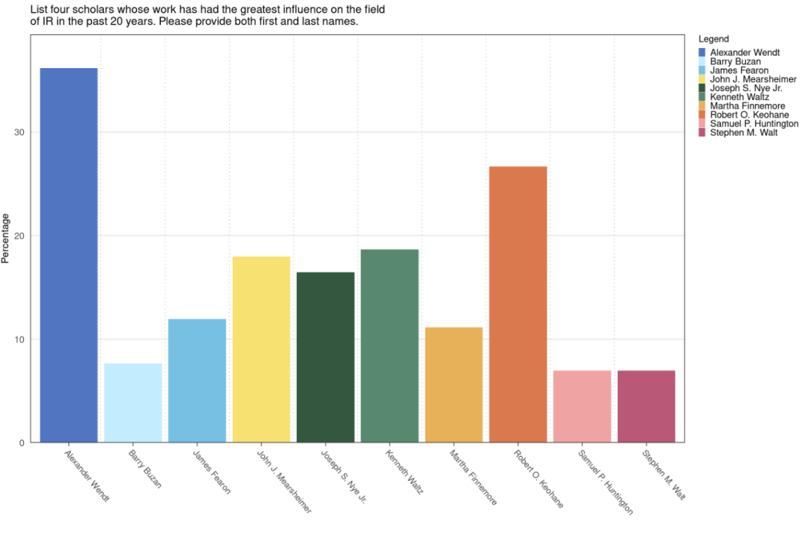
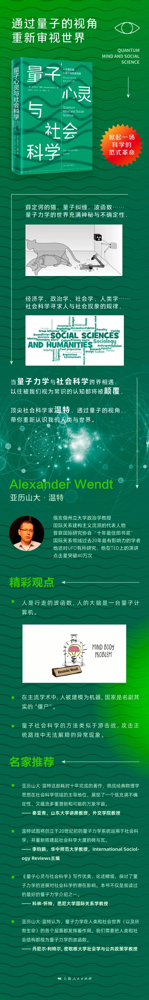
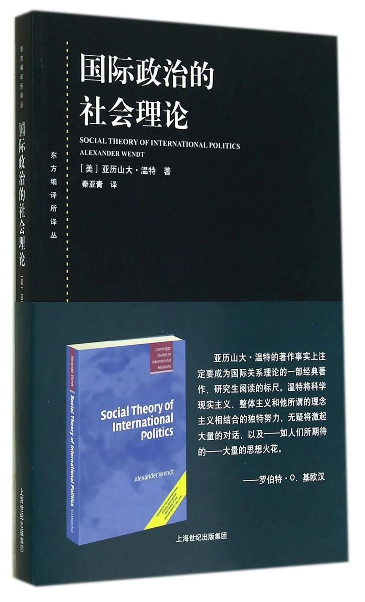

收录于合集 #著作推荐 12个


**
**
《量子心灵与社会科学》
[美] 亚历山大·温特著
祁昊天 方长平 译
出版社：上海人民出版社
出版时间：2021年8月
在国际关系学界，没有人不知道亚历山大·温特，他喜欢跨界，当年凭借将社会学的研究引入国际关系，写就《国际政治的社会理论》，为他赢得巨大声誉，他也因此成为国际关系建构主义流派的代表人物。
2017年，在一项对全世界国际关系学者的调查中，温特被评为国际关系领域过去20年最有影响力的学者。
2015年，温特再次跨界，十年磨一剑，写出堪称神作的《量子心灵与社会科学》。这次他的雄心更大，横跨量子力学与社会科学，试图实现物理学与社会科学的本体论统一，甚至掀起一场社会科学的范式革命。

亚历山大·温特 俄亥俄州立大学政治学教授，曾在耶鲁大学和芝加哥大学任教。他的研究领域为量子社会科学、社会科学哲学、国际关系理论。他是国际关系建构主义流派的代表人物，曾获国际研究协会“十年最佳图书奖”、国际关系领域过去20年最有影响力的学者。他还对UFO有所研究，在TED上的演讲点击量突破40万次。
著名国际关系学者 秦亚青 教授认为本书“ 极富冲击力的思想无疑为社会科学的知识生产和国际关系的理论发展开出一方新的天地 ”。
为了方便广大读者更好地阅读本书，更轻松自在地探索量子力学与社会科学的广阔世界，温特为本书拍摄了一部生动有趣的科普视频，读者可以配合视频阅读本书。
点击观看视频 ↑↑↑
**

目 录
第一章 量子社会科学
序言 我们为什么要研究这个问题
导言
物理学的因果闭合
经典社会科学
意识的反常
社会结构的反常
仿佛解释与非科学假想
简述我的核心问题与答案
将你的观察者置于情境当中
第一部分 量子理论及其诠释
导言
第二章 三个实验
双缝实验
贝尔实验
延迟选择实验
第三章 六项挑战
对原子论的挑战
对决定论的挑战
对机械论的挑战
对绝对空间和时间的挑战
对主客体差异的挑战
第四章 五种诠释
诠释问题与超诠释框架
工具主义:哥本哈根诠释
实在论之一:唯物主义诠释
实在论之二:唯心主义诠释
第二部分量子意识与生命
导言
第五章 量子大脑理论
你的量子大脑
对当前争论的评价
第六章 泛心论与中立一元论
泛心论
中立一元论与时间的起源
第七章 量子生机论
唯物主义-生机论争论
量子视角下的生命
为何称其为生机论？
第三部分 人的量子模型
导言
第八章 量子认知与理性选择
量子决策理论
无限理性？
量子博弈论:下一个前沿
第九章 能动性和量子意志
动机、目的和超前行动/198自由意志与量子理论
第十章 时间中的非定域经验
关于改变过去的定性争论
改变过去的物理
第四部分 语言、光和他者心灵
导言
第十一章 量子语义学和意涵整体论
意涵中的成分与语境
量子语境主义
第十二章 直接感知与他心
感知问题
光的双重属性
全息投影与视觉感知
语义非定域性和主体间性
第五部分 能动者-结构问题的回归
导言
第十三章 一种涌现的、整体的、扁平的本体论
随附性遇到外在主义
能动者、结构和量子涌现
社会结构中的下向因果
第十四章 迈向量子生机论社会学
全息国家
作为有机体的国家
国家和集体意识
生机论社会学的政治学
结 论
关于认识论的夜思
太优雅而不真实？
参考文献
译者序言
祁昊天 北京大学国际关系学院助理教授 方长平 中国人民大学国际关系学院教授
《量子心灵与社会科学》一书是亚历山大·温特继1999年《国际政治的社会理论》出版后又一部引起学界广泛关注的力作。如果说《国际政治的社会理论》的出版奠定了温特作为主流建构主义领袖人物的地位，给西方国际关系理论带来范式革命，那么2015年出版的《量子心灵与社会科学》试图要在整个社会科学界引起一场革命性反思。本书出版以来，西方学术界对其褒贬不一，即便在国际关系学界也没有引起有如当年《国际政治的社会理论》问世时的巨大反响。西方国际关系理论在温特的建构主义理论之后，出现了所谓的“大理论的萧条”和“宏观理论生产的危机”，本书的出版能否重振国际关系理论雄风尚待观察，但正如秦亚青教授在本书中文版推荐语中所说：“书中论证或有时而不周，观点或有时而可商，但极富冲击力的思想无疑为社会科学的知识生产或国际关系理论发展开出一方新的天地。”
一
17—19世纪，被当代社会科学或宽泛意义上社会研究（政治学、经济学、社会学等）所奉为思想基础的探索都建立在物理学、自然科学发展基础上，如霍布斯、休谟、斯密、孔德、杰文斯、门格尔、瓦尔拉斯、克拉克、马歇尔、帕累托等思想者的发现或创造。对经典物理学及其世界观的借鉴并非仅停留在类比和比喻的层面，而是触及深层影响。20世纪早期，经典世界观的形而上学假设，如唯物主义、决定论、定域性等，都长久影响着后世的社会科学发展，其最大的成果自然是实在论的基本认知，而这些假设也同时成为社会科学研究的支柱与约束。
20世纪初量子革命引发物理学变革，但是社会科学中的“物理学羡慕”却告一段落。究其原因，也许有以下几点：早期的借鉴尝试失败；社会研究群体更加自信；社会研究客体所在的宏观尺度不受微观尺度物理学发现的影响。此外，也许还有更深层的原因。对于量子视角下世界本质的解读出现过哥本哈根诠释、多世界解释、系综诠释、隐变量理论、退相干解释等数十种解读，而在决定论合理与否、波函数的实在性、历史唯一性、是否存在隐变量、波函数是否需要坍缩、观测者的作用是否需要考虑、定域性是否成立、反事实确定性是否成立等等问题上，不同观点被提出、被支持、被否定，你方唱罢我登场，好不热闹。但没有争议的一点是，我们对于物理世界本质的认识仍然没有定论。那么社会研究不再继续追随，似乎也便是合理的。
总之，经典世界观依然在当前对社会研究的思想体系、世界观、本体论起主导影响，体现在这些基本认识上：心理状态由神经构成决定；神经状态具有完好的物理学定义；人的行为遵从经典概率论；意识是一种副现象，不具解释力；心灵是一部计算机，或者说人是行走的计算机；所谓理由，主要是亚里士多德所谓的动力因，而与形式、质料、目的因关系疏淡；社会研究的客体中，不存在远距离作用；社会结构可还原为个体特性与互动；时间与空间是研究对象的客观背景条件；至少从原则上来说，我们可以在不干涉观察对象（广义的社会个体及互动）的前提下对社会进行观察。
至少对于实证主义者来说，以上这些应是不言自明的。对于解释主义者而言，虽然并不认同照搬自然研究的方法论，但在物质、能量等基本本体论问题上却同样态度暧昧。赫胥黎认为科学与常识之间存在连续性的关系，是功能、目的和形式的彼此成全。而在自然科学与社会研究之间，前者的发展阶段是通过远离常识来重塑常识，包括量子观下的概然性、测不准原理、不确定性、叠加态、自我干涉等；而社会研究依然在通过对标常识来理解常识。量子革命后，自然科学离主观认知越来越远，世界本质变得愈加难以捉摸。而信息革命后，社会科学离主观认知却越来越近，这种认识社会能力的提高至少是真、伪信息与知识快速海量传播之后我们所出现的错觉。
基于经典物理的社会研究存在两个“胎里带”的问题。第一，经典世界观所赋予的决定论。第二，来自人性自我解读与安全感所需对自由意志的强调。但这二者之间，似乎又存在无法绕开的矛盾。那么，像物理世界一样引入非经典世界观也便成为了一条可能的道路，虽然很多人认为它不成立或至少不是唯一途径。温特撰写此书并非为给社会科学、政治科学或国际关系研究提供新的完整范式参考，这或许会成为他后半生学术探索的终极目的，但并非本书目的。写作本书，正如温特自己所言，更多是一种发问与对答案的探求尝试，是他对于量子观视域下物理学、哲学、心理学、脑科学、语言学、历史学、政治学等多个学术领域的“人类学”式观察，是一篇超体量的“文献综述”与再思考。从这个意义上来说，至少截至本书为止，温特在这一路径上所作的更多是“述而不作”。当然，无论是“（关于量子观的）第二本书”计划还是译者完成本书校对时温特待审的量子与政治学文章，都会是其所“述”基础上的发展。
温特的核心问题在于探讨：量子观下的社会研究本体论是怎样的？我们所熟知的社会实体、组织、行为体是怎样的？心身（心物）问题和意向性、意识的存在层次，个体人与社会的身份与关系是怎样的？而在这些问题背后，学科与科学哲学问题又包括：进行社会科学研究是否需要借鉴自然科学的进展与发现？如答案是肯定的，如何借鉴，如何融合？如答案是否定的，社科的边界在哪里？
二
诚如温特所言，本书不是写给国际关系学者的著作，而是写给整个社会科学界的，但其中包含的思想和观点，仍然对国际关系学者有诸多启示，这些启示在某种程度上是革命性的，甚至超越了其建构主义的思想。
第一，在本体论层面，通过量子意识理论，重新建构了物质主义本体论和理念主义本体论的关系、物质和意识、心—身关系。包括现实主义、自由主义和马克思主义等理性主义国际关系理论强调前者，认为物质性权力、协调物质利益的制度和经济基础本质上是物质，国际政治的后果归根到底可以通过物质性因素得到解释。后者强调国际政治生活本质上是观念构成的，是社会的。反思主义国际关系理论大多承认这些观念的独立意义，认为国际社会本质是观念建构的。温特创立的温和建构主义尽管本体论上是观念的，但它也试图在物质—理念之间进行某种调和，所以理念主义的本体论和弱势物质主义构成了温特建构主义本体论的核心。这里需要强调的是，温特的观念是共有理念，是能动者（主要是国家）在互动中建构的。但是温特的建构主义没有回答，能动者在互动之前的理念是如何形成的，也就是说能动者的意识的起源和生成问题。
第二，在研究单元和分析层次上，量子社会科学观照下的国际关系理论也明显超越了建构主义基本假设。就研究单元而言，温特的温和建构主义同样强调国家中心主义，因为温特是要创立一个替代华尔兹结构现实主义的国际政治理论，因此，国家依然是温特建构主义理论的核心单元，温特对国家身份的探讨、对国家间的互动实践塑造无政府状态的研究、对国家既是一种制度、“国家也是人”的反思，都意味着温特建构主义理论还是探讨国际体系与国家之间关系的理论。但是在量子世界观中，温特从强调国家到强调个体的作用。这样导致在分析层次上，温特认为个体在本体论上是扁平的，所以在以前讨论结构—能动者关系的层次分析法在量子视角下是不存在的。基于温特的量子观，社会结构与个体的关系得以重塑，经典世界观下的“涌现”效应被扬弃。
温特特别强调量子力学中的“纠缠”与建构主义“互动”的差异。他认为个体身份是纠缠的结果，纠缠发生在互动之前，“由于我们自出生便在社会结构中发生纠缠，人类的心灵实际是无法完全被分隔的。”这种不可分性意味着，包括纠缠在内的量子现象只能基于其更大整体的关系来定义，这也体现了量子力学的非定域性与超距效应,同时表明量子现象是整体性的，而不是个体性的，在方法论上是整体论的。
第三，观察和测量对于国际关系研究的后果是有影响的。在经典世界观中，不同的观察和测量方式不会影响结果，因为主体—客体两分法导致主体以一种相对客观和中立的方式对客体的特性进行观察和记录，这些特性是独立于主体和主体的观察而存在的；而一旦观察者打破这种中立性与客观性，将自己的价值观置于观察过程中，就会产生测量和观察的偏差。温特的温和建构主义实际上就是试图通过“科学实在论”，实现观念本体论与科学实在论的认识论相融，认为个体的人可以独立于观察到的社会现象，并对社会现象进行客观实证研究。但在量子世界观中，作为观察者、测量者参与到被观察者的结果中，尽管并不意味着观察者创造了“社会实在”。我们经常谈论的国际关系中出现“自我实现的预言”、经常提及的各种“陷阱”之说，本身就预示着，国际关系的主体本身参与（例如语言、话语的表现形式）到国际事件的演变进程。建构主义强调的是主体间的互动实践对国际体系属性的作用，而基于量子论温特所强调的是能动者的观察和测量本身对结果的影响。
第四，不确定性是量子世界观和经典世界观的本质区别。在经典世界观指引下，社会科学研究的目的总是为了解释社会发展演变的规律，在国际关系中，所谓理性主义的国际关系理论和建构主义都是如此。不确定性、复杂性的研究近年来在国际关系中也多有涉及，例如杰维斯提出的国家之间互动所产生的“非意图性后果”。但这些还是在经典世界观的范畴之内。而在量子世界观中，“人是行走的波函数”，人的属性是不确定的，在不同的纠缠系统中，人的属性是模糊的，存在多种不同的偏好，无论是外界还是行为体自身都难以确定自身的偏好。经典世界观假定人先有偏好（利益），再有行为，建构主义也持此观点，所谓“身份建构利益，利益决定行为”。但在量子世界观中，温特认为应该是先有行为后有偏好。这并非说行为体在行为之前没有利益，而是利益呈现出很大的不确定性，处于一个叠加和潜在状态，人是“行走的波函数”，只有在行为发生后，例如观察、测量，波函数发生坍缩或叠加态之间的相干性在经典世界消退（在这两种诠释体系之间，温特的论述存在一定模糊性），最终呈现出一个确定的、我们所熟悉的经典世界。
三
机械的自然观或机械观，或更准确地说，力学的自然观，是简洁、美丽、确定且管用的，帮助我们在人类所熟悉的物理尺度下理解、掌握、描述和预测机械运动。因此我们对这种自然观、世界观有着天然和后天被规训的亲近与满足感。而正如近代物理学家发现无法通过力学路径来解释电磁现象，而开始反思并最终发现电磁与力学同为基本规律而非后者的映射一样，社会研究也在逐渐经历这样的演进，只是所需时间更为漫长。
温特并非将量子观引入社会研究的第一人。诸如量子决策论等已经颇具规模和影响的学术探索是这本专注于本体论的著作之外更容易为人所接受的尝试。打破还原论，突破涌现论，是量子社会科学走到今天所确立的标尺。而下一步，如何更好地连接宏微观层面，使得观察人类尺度世界并生于其中的我们能够得到自然科学发展的助力，决定了量子社会科学能否站得住脚。当物理学家纠结并争论于哪种诠释描述了世界“本相”时，我们这些社会研究的主体也需了解在我们自身与被研究客体之间存在何种自洽。温特所推崇的退相干解释，也许是一种可能的方向，但显然在本书中温特做得远远不够，甚至他自己都在观察者效应、波函数坍缩与相干性这些不同诠释体系的核心要素之间徘徊、矛盾，甚至出现错误。
整体论视角下的不确定性，如何在社会生活中被呈现和理解，同样是这下一步的关键。而能动者与结构之间的关系是整体论亟需进一步厘清的主要问题之一，同时也是本书的论述出发点。我们认为，在t0时刻与t﹣1时刻之间，能动者与结构的共同不确定性，也许将是我们在观察互动、变化、过程、影响这些社会活动基本环节的重点。在政治学与国际关系领域，量子观是否有必要被引入、如何正确引入，尚待探索与讨论。其中，在国际治理的机制复合体演进过程中，我们似乎可以找到一些蛛丝马迹。从机械的整合视角，到有机的融合视角，在日益复杂的全球公域问题治理中，个体与网络的关系，复杂网络下节点的可被定义性与属性的不确定性，均在现实实践中有所体现。在社会生活中，从简单规则出发，单一个体与系统都能够演化形成新的、多变的、迭代后的结果。而在姑且可被称为“机制复合体+”的复杂网络中，能动者与结构的关系不只是相互建构、相互确定属性，而是经历复杂的共演化，其本身甚至并非先验存在，其身份、认知、功能、利益，或都不再是我们所熟悉的社会网络分析中所预先确定的那些节点属性。
由微观而宏观，既然相对于原子、分子的宏观尺度（亿万原子质量级别，如红细胞）量子纠缠已在不久前被观察到，那么未来真正可测量的社会宏量子效应也许同样可以成为可被观察并用以解释社会“反常”的常态。也许这种学术范式演进的周期会很长，但现有研究，包括温特在本书中大量引用的量子社会科学成果，足以给我们信心。
此外，量子观对社会研究的引入需要区别通俗与庸俗，要避免低效、无效的语义附会。在人类的哲学思考中，这种事情一再发生。例如宋代以后，道教内丹学说大讲特讲“三教合一”，并在文本意义上吸收了大量的禅宗、心学成果，但这种“吸收”多是牵强附会，舍本求末或完全偏离了原旨。当今社会上大行其道的“遇事不决、量子力学”确是伟大的人民智慧体现，看似追捧高深学问实则讽刺那些将量子论玄学化、庸俗化的现象，甚至包括身居学术高位而跨界误读、误导的人和事。
另外，社会文化与思维范式的关系也是值得考虑的问题。在译者与温特交流时，他认为没有必要为这本书做不同译本的序言。但同时，他猜测文化与量子思维可能存在联系，并期待看到中国读者和中国人作为群体如何与量子思维擦出火花。这是一个很大的命题，这里无法进行任何假说和论证尝试，也或许包含了温特对于西方个人主义与中国集体主义倾向的部分迷思。但在思维与行为方式之间能否在群体层面实现整体性联动这个问题上，经济学学说将其对于行为的解释变成对行为的塑造，似乎能够给我们一些启示。
温特此书的影响或贡献，无论是在西方学界还是中国学界，还会受到语言问题的影响和挑战。在温特独有的语言风格基础上，我们尽力在严复先生的“信达雅”、钱钟书先生的“化境”，以及许渊冲先生在低中高三等十二个标准之间，寻找符合本书传递信息所需要的平衡。一方面，避免生硬的翻译腔，使其更符合中文表达和阅读习惯，同时修正部分原文中欠妥和错误的内容，另一方面，也注意保留温特原本希望通过个人语言风格所传达的东西。但如果语言表达本身确如温特所介绍和分析的那样同样逃不过量子世界观的“纠缠”（此纠缠非彼纠缠），那么至少我们希望，本书能够引发更多的合理反思与争鸣。理查德•费曼曾讲：“我想，可以这样说，没有人真正懂得量子力学。”我们大概也可预判，您在读过本书后依然无法明确量子世界观到底是怎样或应是怎样的。无妨。既然物理学家们依然在不断争论量子世界观的本体论内涵，那么我们想，争鸣本身应是比结论更为重要的。
探讨量子社会科学的可能性，是否为一件“未得陇而望蜀”的妄事？我们认为不是。牛顿力学根深蒂固的影响已使社会研究的主体在追求决定论的道路上，几乎陷入了拉普拉斯妖的迷思，我们有必要尝试并探索新的路径，并非为了哗众取宠，而是去直面那些传统社会研究路径未能很好处理的、温特所一再强调的“困难问题”。最后，让科学的归于科学，玄学的归于玄学，在量子论之于社会研究方面，我们做不得崂山道士，虽然他那半吊子的穿墙术貌似有几分穿隧效应的影子。
2021年7月于北京祁昊天、方长平
延伸阅读
 《国际政治的社会理论》 亚历山大·温特 著 秦亚青 译上海人民出版社2014年版
排版 | 陆霜滢